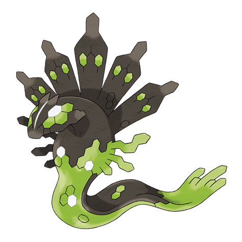

Zygarde Weakness (2x / 4x)
Ice 4x Dragon Fairy
#718 · Dragon / Ground · Order Pokemon · Gen 6
Zygarde is the third piece of the Kalos legend, and the only one that spends most of the game scattered across a region as cells and cores: a Dragon/Ground legendary with 121 Defense and nothing to evolve into.

BST 600
Abilities: Aura Break · Evolution stage: none
Read straight off the Pokemon Type Chart, on the same 18-type grid the rest of the site uses.
Ice 4x Dragon Fairy
Fire Poison Rock
Electric
Mewtwo is the other major legendary in the dex, and Squirtle is a much easier place to begin a run.
Kalos's 600-total third
Number 718 closes out the Kalos section of the dex, and it is a Dragon and Ground type from Generation 6. The listing on this page is the standard fifty percent form, the one with a 600 base stat total and the Aura Break ability. There is no evolution stage before it or after it.
Zygarde is a legendary rather than a mythical, so it is met in the world instead of handed out at an event. Its most unusual feature is not a stat or a move: it is a Pokemon that exists in pieces, and the games make you assemble it.
Zygarde is built out of Cells and Cores scattered around a region. Collect enough and the forms change: ten percent gives a lean dog-like shape, fifty percent is the standard build, and gathering everything produces the Complete form, which pushes the total from 600 up to 708.
Each form has its own stat spread and its own silhouette. The page here covers the fifty percent version because that is the one the dex entry describes, but a trainer who completes the collection ends up with something noticeably different from the numbers below.
Aura Break reverses the effect of opposing aura abilities, which in practice means it turns Fairy Aura and Dark Aura against the Pokemon carrying them. That is a direct answer to the two cover legendaries of its own generation, which is exactly what the third member of a legendary trio is supposed to be.
It is a narrow ability by any measure. Against a team with no aura abilities it does nothing at all, and unlike most legendary abilities it does not help Zygarde survive or hit harder. It is a targeted tool, and it only matters when the opponent brings the right Pokemon.
Nothing in the spread is wasted, and nothing is extreme. 108 HP, 100 Attack, 121 Defense, 81 Special Attack, 95 Special Defense and 95 Speed. Defense is the high mark, six points above the Attack score and well clear of the special side.
The result is a bulky attacker rather than a sweeper. It takes physical hits better than almost anything at its total, hits back hard enough to matter, and moves at a speed that wins against the slower half of the dex. There is no column that gives an opponent an obvious free turn.
The three types that hurt it are Ice, Dragon and Fairy. Fire, Poison and Rock are halved. Electric is a complete blank, which is what the Ground half buys, and the remaining types land neutral.
Ice is the one that stands out, since it catches both halves of the typing. Fairy arrived with the same generation as Zygarde itself, so the Pokemon launched with an immediate answer in the dex, which is an unusual place for a legendary to start from.
Lay the team out with the Pokemon Team Picker and use the Random Pokemon Picker for anything still missing. If the run has restrictions attached, the Nuzlocke Team Builder is the place to set them.
The reference pages cover the rest: natures on the Pokemon Nature Chart, stat checks in the Pokemon IV Calculator, and the Pokemon Wheel Spinner for choices that do not need either.
For the collection side, Pokemon Shiny Odds gives the numbers, the Random Shiny Pokemon Generator runs the search, the Random Mega Pokemon Generator covers the large forms, and Who's That Pokemon covers the guessing.
Zygarde is best used as the Pokemon you send out when a fight has become a grind. 121 Defense and 108 HP let it absorb physical attacks all day, and 100 Attack means the opponent cannot simply ignore it while it does so.
The 95 Speed is the interesting number. It is not fast, but it is fast enough to move before a large part of the dex, which means it usually gets its hit in before the counterattack arrives. A Pokemon that both survives and answers is a rare combination at this stat level.
Assembling the full set of Cells and Cores produces a form with a 708 total and a much heavier defensive profile. It is a different Pokemon in everything but name, and it is the reason Zygarde reads as a project rather than a single encounter.
For anyone working through a living dex or a challenge run, that structure is the appeal. It is the only legendary in the series that asks the player to gather pieces of it from across an entire region before the Pokemon is finished.
As a cover-trio third, Zygarde is the defensive option. Xerneas attacks from the special side, Yveltal mixes, and Zygarde holds the line and answers the other two's abilities directly. In a straight comparison of raw numbers it is the least explosive of the three.
That is consistent with the role the games give it: not a star, but the thing that stops the other two from running away with a fight. Its value shows up in longer battles, which is where a 121 Defense legendary is meant to be used.
FAQ
Zygarde is a Dragon and Ground type in its standard form. That gives it three weaknesses, three resistances and a full immunity to Electric moves.
Ice, Dragon and Fairy all do double damage to it. Fire, Poison and Rock come back reduced, and Electric attacks have no effect on it at all.
No. Zygarde has no evolution in either direction, so there is no stage before it and nothing after it. What changes is its form, which depends on how many Cells and Cores have been collected.
Aura Break, which reverses the effect of opposing aura abilities such as Fairy Aura and Dark Aura. Against a team without those abilities it has no effect at all.
There is no chart, because the Pokemon never changes stage. The forms are the only thing that varies: ten percent, fifty percent and the Complete form, each with a different stat spread.
Yes. Zygarde is a legendary, the third member of the Kalos trio alongside Xerneas and Yveltal, and it is encountered in the world rather than given out at an event.